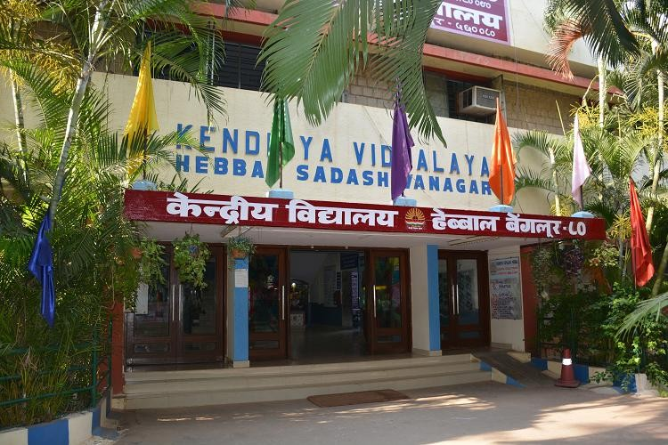
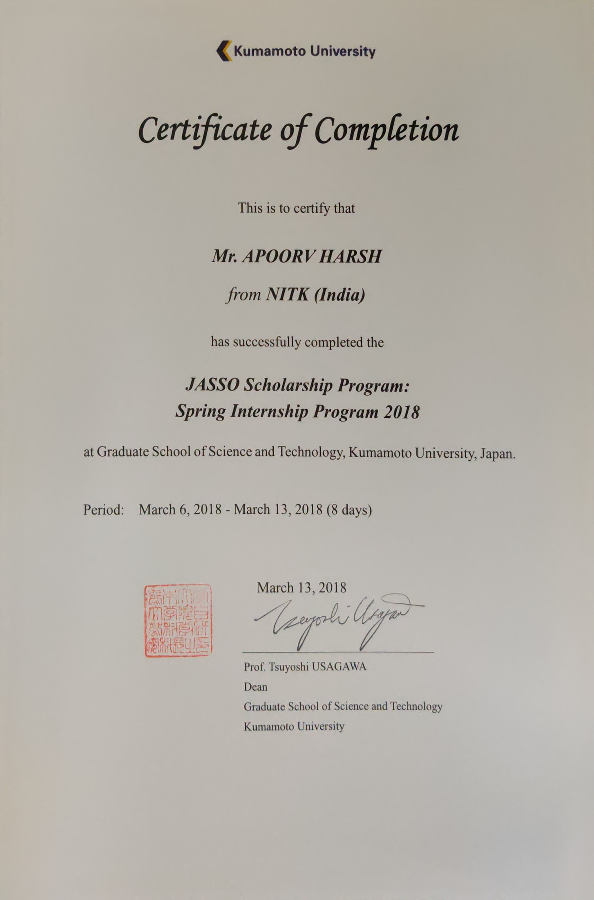
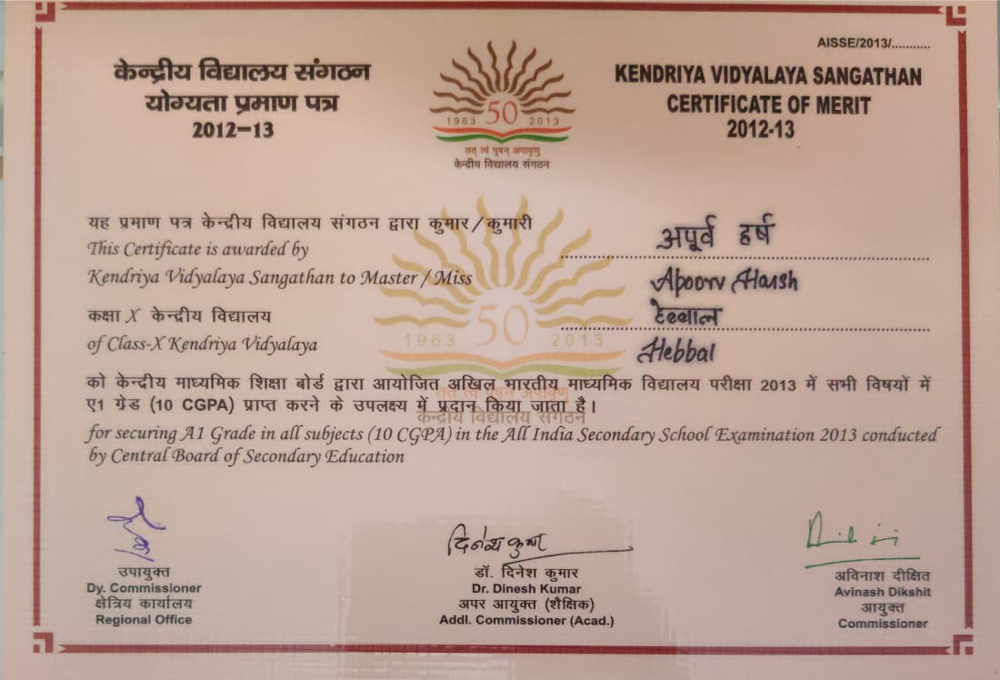

01
Apoorv Harsh
Manager, Solution Architecture @ Harness
Solution Architect and engineering leader with 7+ years designing and delivering enterprise-scale CI/CD, Infrastructure-as-Code (IaC), and cloud architecture solutions for Fortune 500 organizations. Proven track record leading cross-functional technical teams, resolving critical production escalations, and driving account growth through large-scale DevOps transformation. Deep hands-on expertise across AWS, GCP, Azure, Kubernetes, and Terraform, with a consistent record of translating complex technical requirements into secure, compliant, and highly available systems.
// automation enables innovation — architecting resilient enterprise DevOps systems, Kubernetes platforms, and cloud solutions.
01 // SYS_TIMELINE
Work Experience
02
03
02 // SYS_CONFIG
Skills
// CORE COMPETENCIES
Solution Architecture & Pre-Sales Engineering
CI/CD Pipeline Design
Infrastructure as Code (Terraform, OpenTofu)
Kubernetes & Container Orchestration
Multi-Cloud Migration (AWS, Azure, GCP)
DevOps Transformation
Disaster Recovery & High Availability
RBAC, OIDC & Security Compliance
AI/LLM-Driven Automation
Technical Team Leadership & Mentorship
Enterprise Client & Stakeholder Management
Cloud Platforms
CI/CD & IaC
Containers
Languages / Scripting
Databases
Observability
Operating Systems
03 // CERT_CREDENTIALS
Certifications
Dec 2021
Certified Kubernetes Administrator (CKA)
Cloud Native Computing Foundation (CNCF)
Oct 2020
AWS Certified Solutions Architect – Associate
Amazon Web Services
Feb 2021
AZ-104: Microsoft Azure Administrator Associate
Microsoft
Aug 2021
HashiCorp Certified: Terraform Associate
HashiCorp
Jan 2020
AZ-900: Microsoft Azure Fundamentals
Microsoft
Verified
TensorFlow Developer Certificate
TensorFlow / DeepLearning.AI
Verified
IBM Data Science Professional Certificate
IBM
04 // FOUNDATION_LAYER
Education
National Institute of Technology Karnataka (NITK)
Bachelor of Technology (B.Tech.)
PERIOD: 2015 – 2019
CGPA: 9.07 / 10.0
RANKING: NIRF Rank #10 Nationally

Kendriya Vidyalaya Hebbal, Bangalore
Senior Secondary (AISSCE & AISSE)
AISSCE (12th, PCMCs) - 2015: 94.0%
AISSE (10th, Science) - 2013: CGPA 10.0
HONORS: Certificate of Merit
05 // SYSTEM_RECOGNITIONS
Select Achievements
Gold Medals - NITK Surathkal
Conferred by Vice-President of India, Venkaiah Naidu
Institute Gold Medal for overall academic excellence.
Hutti Gold Mines Medal for highest academic distinction.

JASSO Scholarship Program
Japan Student Services Organization · Exchange & Academic Honor

Certificate of Merit
CBSE Board · Exceptional Academic Performance in AISSE
06 // SYS_OUTPUT
Get in Touch
aprvh1@node:~$
cat /etc/apoorv/contact.json
{
"name": "Apoorv Harsh",
"role": "Manager, Solution Architecture",
"location": "Bangalore, India",
"status": "Available for discussions & enterprise architecture engagements"
}
aprvh1@node:~$
./connect.sh --output=channels